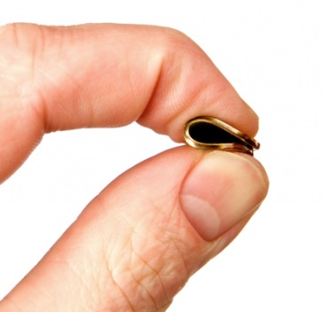
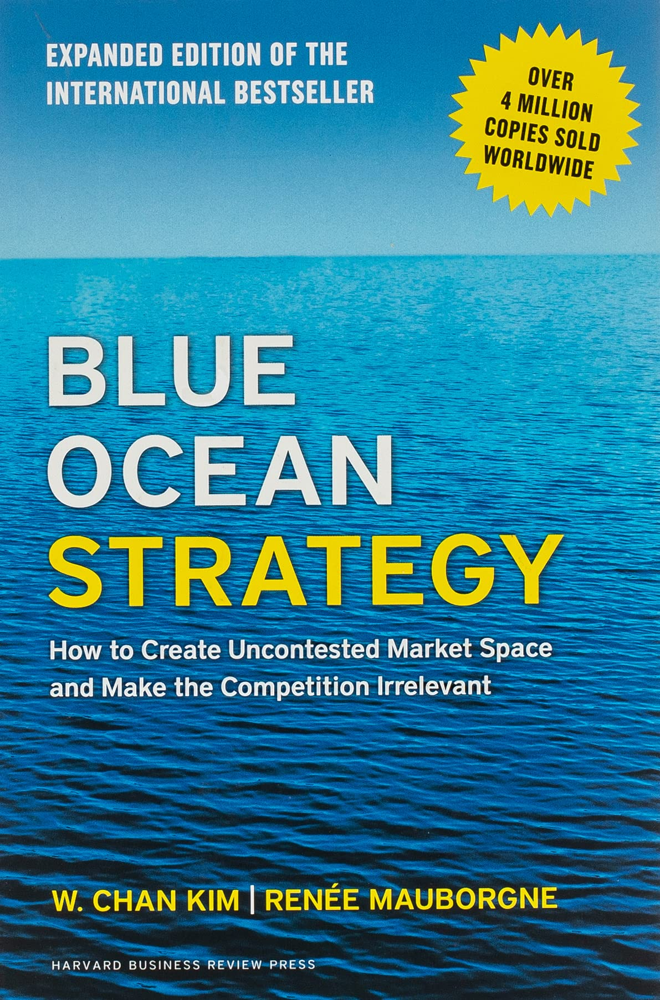
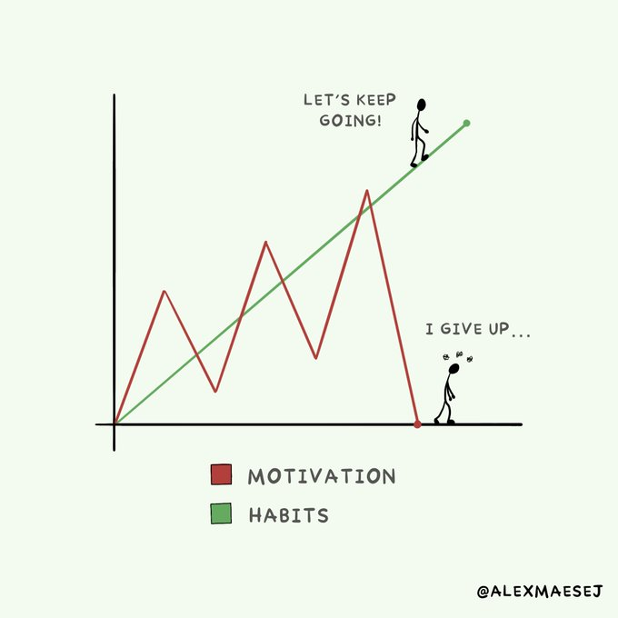

🤔
Four tips to pinch every penny of a graduate student stipend
September 5st, 2022
As a grad student there are ways to save money. It isn't always easy, but it is possible.
Here are some tips to help pinch every penny of a graduate student stipend.

1. Keep track of your spending. Knowing where your money is going and how
quickly it's going where it's going is it important. Awareness is the first step of
identified where you should spend more money and, more importantly, where you should
spend less. In other words, this will help you increase the fraction of your stipend
spent on what you need and reduce the fraction spent on what you want.
2. Pay yourself before you pay others. Investing in yourself is the best investment you
could ever make. Make sure an allotment of your direct deposit goes directly towards
your savings, investments, or whatever you feel is best for your long-term financial
stability. The point is, it is a good habit to pay yourself before you pay others.
3. Cook more. Cooking meals is substantially cheaper than ordering takeout, delivery,
or eating at a restaurant. I’m not saying never go out for food. I love going out for
food and it is a great way to get together with friends. But when going out, there are
fiscally frugal choices that can be made. For example, consider skipping on drinks. They
are overpriced.
4. Find fun for free. When looking for things to do check out what your city
or town has the offer that's for free. This could be hiking, concerts, arts festivals,
craft fairs, and more. Besides, who you are doing these activities with is more
important than what you are doing.
The list can go on-and-on. There are tons of ways to save during graduate school! This
will, of course, depend on where you are going to graduate school and what your stipend
is, but I hope these tips help or at least stimulate your internal dialogue for how to
save money during graduate school.
Thanks for checking out my two cents on pinching pennies 😄
Blue Ocean Discoveries: new frontiers that yield insights for years
September 1st, 2022
Antibiotics, gel electrophoresis, the structure of DNA, restriction enzymes, polymerase
chain reaction, CRISPR-Cas9, AlphaFold. These revolutionary scientific innovations are
blue ocean discoveries.

A blue ocean discovery is a play on a business concept called a blue ocean strategy. A
blue ocean strategy refers to a new business model, product, or otherwise, that creates
new market space and demand. In contrast, red ocean strategies require competing in
existing markets, beating the competition, and exploiting existing demand. The red ocean
is a stressful and ruthless place. (These concepts were introduced and elaborated on in
the well-read book “Blue Ocean Strategy” by W. Chan Kim and Renée Mauborgne.)
Yellowtail, a wine company from Australia, is an example of a blue ocean product in the wine
industry. Before Yellowtail, there were two wine categories: premium and budget wines.
These groups differed in price, use of enological terminology, aging quality, vineyard
prestige and legacy, and complexity. Yellowtail created a new market in the US wine
industry by developing an easy-to-drink, fun, and adventurous wine. Yellowtail removed the
complexity of enological terms and pretentiousness of prestige and legacy—a new brand of
wine that had no competitors emerged. In four years, Yellowtail became the best-selling
red wine in the United States, beating out Californian, French, and Italian wines that
had dominated the US market before.
There are so many scientific equivalents of blue ocean strategies/discoveries. For example,
AlphaFold implemented a novel machine-learning approach for protein structure prediction
wrapped in an easy-to-use interface. CRISPR-Cas9 revolutionized genome editing in a similar
way–unprecedented precision and scalability for the masses to adopt the technology.
AlphaFold and CRISPR-Cas9 technology removed the intimidation of protein structure
prediction and genome editing, respectively. There are also many scientific equivalents of
red oceans. Everybody knows where the red oceans are in their field, so I will not go
over them here.
As scientists, I think we could benefit from pondering what blue ocean discoveries await.
What next discovery will yield insight to last through the years? What will science look
like in five to 10 years? How do we move toward that future today? This is, of course,
difficult to predict, but if anything, it is a fun exercise that pulls you out of the
weeds of an ongoing project and facilitates looking at the big picture.
You know the shortcomings and areas ripe for
improvement in your field. Perhaps, you know an entirely new field that can be developed.
What will your blue ocean discovery be?
1% better every day: the power of small change
August 29th, 2022
Suppose you're sitting in a cold room. In front of you is a cup of ice. Slowly, the room begins to warm.
At first, the room is 25 degrees Fahrenheit but slowly warms to 26 degrees. Then 27, 28, 29, 30, 31. The ice is still solid.
Next, a transformation happens at 32 degrees—the ice begins to melt. At first, one-degree changes appeared to
have done nothing but accumulated to be able to melt the ice. This example from Atomic Habits by James Clear
brings up an important point: the impact of incremental change is often not manifested until much later.

We often convince ourselves that big actions lead to big success. However, I'm not sure I agree. Despite small
(even miniature and microscopic-sized) successes never feeling too exciting or satisfying at a given moment,
incremental success can significantly impact over time and are more useful than bursts of motivation (see image).
For example, if you improve each day for one year by 1%,
you'll end up 37 times better than when you started (1.01365 = 37.78). The converse is also true. If you have bad
habits that make you 1% worse every day, the accumulation of little backward steps can become much greater
(0.99365 = 0.03). (This is another example from Atomic Habits by James Clear.)
This is compounding interest in self-improvement in action—small habits now make significant changes later. It's always difficult to appreciate this in the moment of a small practice, but it is worth it later.
Importantly, change is about the system in place and not the goals. Goals only change your life for a moment;
however, systems give you a framework for continuous improvement. For example, suppose your goal as a scientist
is to publish a paper (which happens to be a "typical" requirement to get a Ph.D. in biosciences at institutions
in the United States). What will motivate you after you publish that one manuscript? What will inspire you to
continue improving as a scientist? Thus, the goal is not to get a Ph.D.; rather, the goal should be to have a system in place for continued scientific discovery and growth as a scientist. A sound system will facilitate continuous improvement as a scientist, enabling you to make more exciting discoveries. Your commitment to the process will help you progress.
Next time your science career faces a challenge—a coding bug, a failed control experiment, or a challenging paragraph to write in a paper in your manuscript—think about the habits that you are building. Tackle the challenge head-on. Improve by 1%—one step at a time. Soon, you will have walked miles.